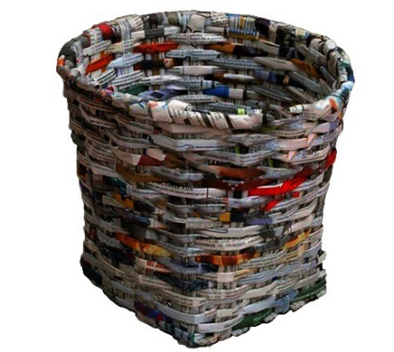
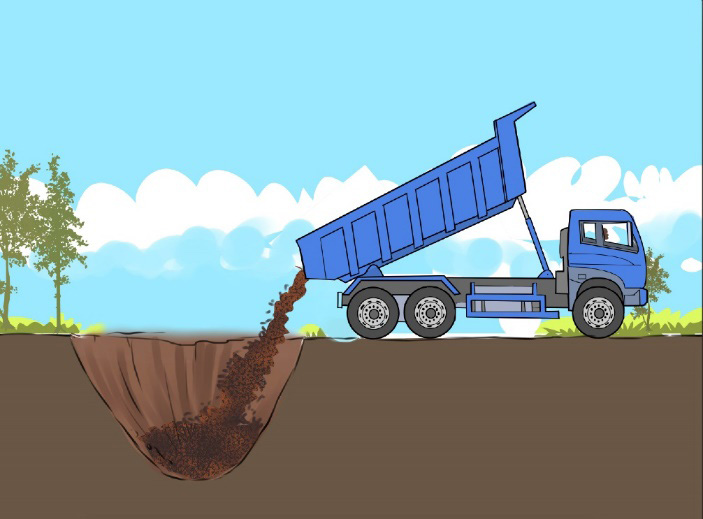

Recycling art paper from fine art activities can contain various colours and make them used for creating valuable art products. For example, they can be used to create art containers (See Figure 6.9).

Landfilling
Landfilling is the practice of dumping waste materials in the ground. A proper landfilling method should be used, including coating the base with a protective layer and choosing a location with low groundwater levels, among other things. In Tanzania, however, this technique is locally done, hence dangerous for our lives. Much effort is being made to construct modern engineered landfilling sites with all the pollution control mechanisms in place. Figure 6.10 shows an example of a landfill waste process.
